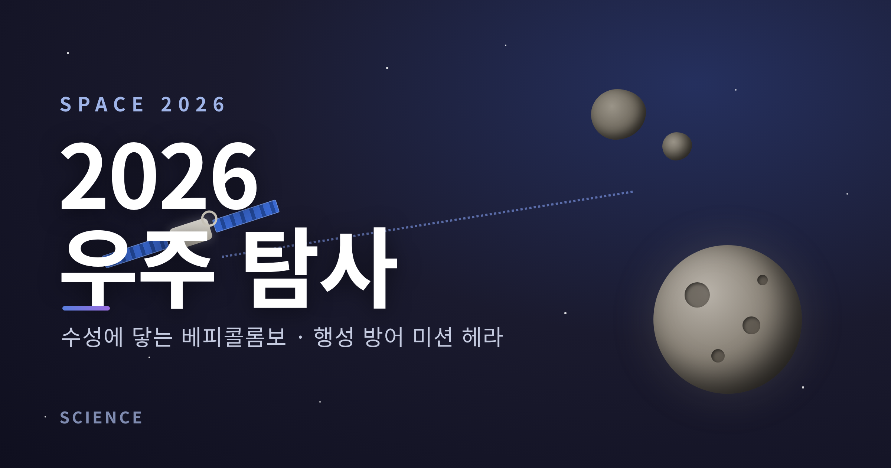
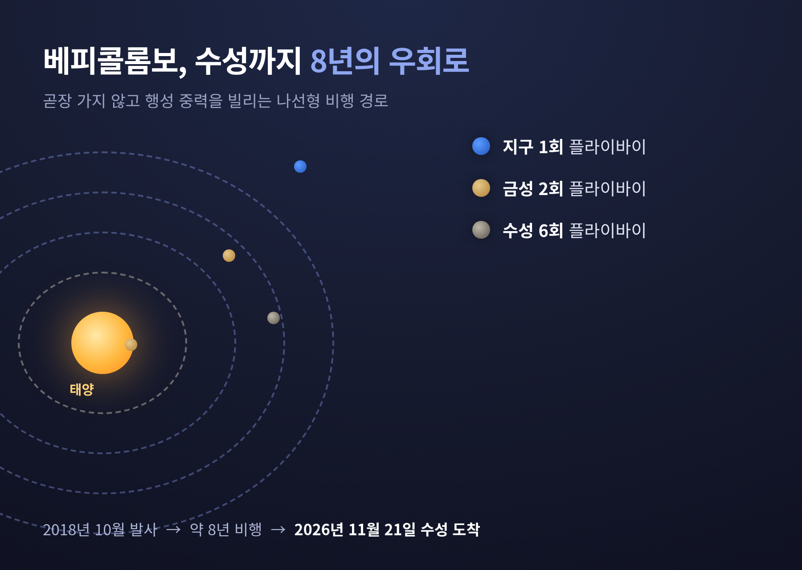
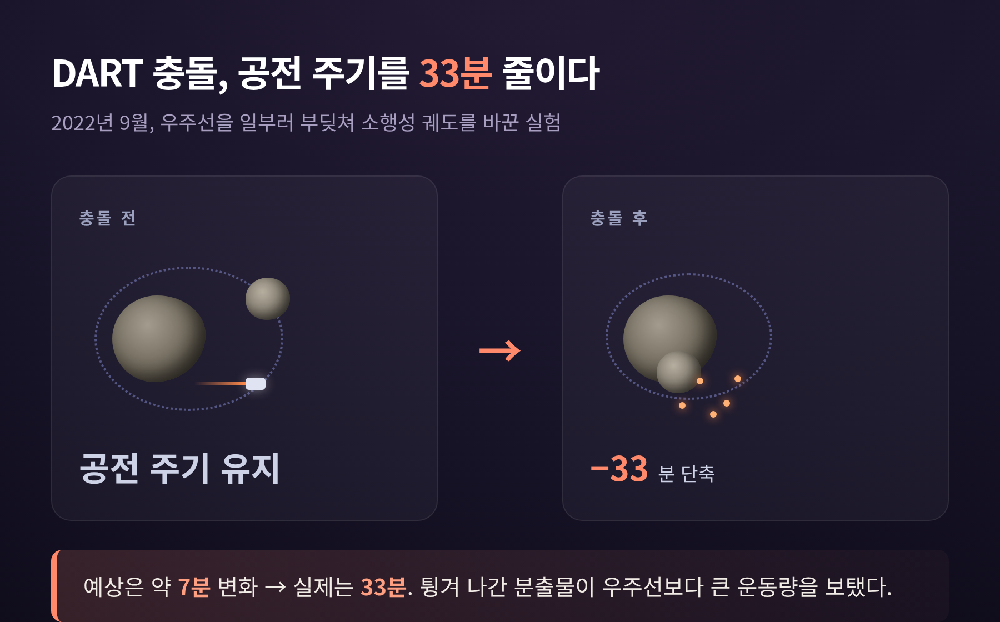
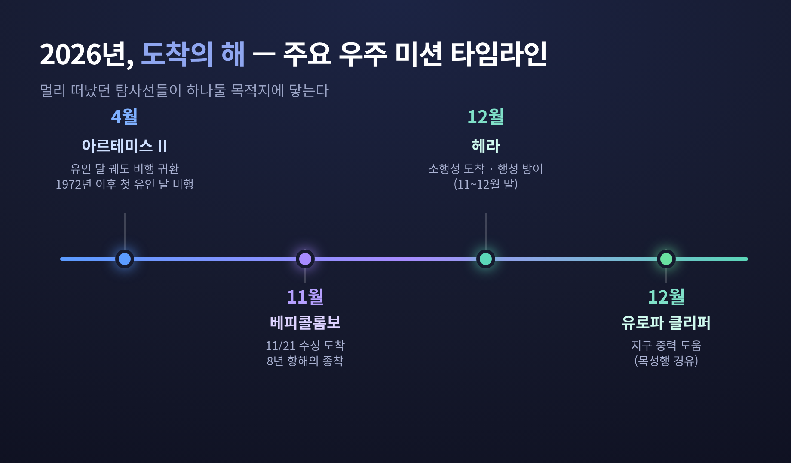

[과학] 2026 우주 탐사 정리 — 수성에 닿는 베피콜롬보와 행성 방어 미션 헤라

오늘은 2026년 우리가 지켜볼 우주 탐사 이야기를 정리해 보려 합니다.
올해는 한 탐사선이 8년의 항해 끝에 수성에 닿고, 또 다른 탐사선이 소행성으로 다가가 인류의 행성 방어를 시험하는 해입니다.
먼저 결론부터 말씀드리면, 2026년의 핵심은 두 가지입니다. 11월의 베피콜롬보 수성 도착, 그리고 연말의 헤라 소행성 도착입니다.
8년을 날아 수성에 닿는 베피콜롬보
베피콜롬보(BepiColombo)는 유럽우주국(ESA)과 일본 항공우주개발기구(JAXA)가 함께 보낸 수성 탐사선입니다.
2018년 10월 20일 아리안 5 로켓으로 발사됐습니다.
수성은 가까워 보이지만, 가는 길은 멀고 까다롭습니다.
태양의 강한 중력 탓에 궤도에 들어서기가 태양계에서 가장 어려운 행성 중 하나로 꼽힙니다.
그래서 베피콜롬보는 곧장 가지 않았습니다.
지구를 1회, 금성을 2회, 수성을 6회 스쳐 지나며 중력의 도움을 빌리는 긴 우회로를 택했습니다.
약 8년에 걸친 이 항해가 2026년 11월에 끝납니다.
JAXA가 공개한 도착일은 2026년 11월 21일입니다.

사실 이 도착은 한 차례 미뤄진 일정입니다.
당초 계획은 2025년 12월 궤도 진입이었습니다.
그런데 2024년 4월 기동 중 추력기에 문제가 생기면서 약 11개월이 더 늘었습니다.
멀고 정교한 여정인 만큼, 한 번의 차질이 곧 1년에 가까운 지연으로 이어지는 셈입니다.
두 대의 궤도선, 각자의 임무
베피콜롬보는 한 대가 아니라 두 대의 과학 궤도선으로 이루어집니다.
도착 후 둘은 분리되어 각자의 궤도에서 일합니다.
| 궤도선 | 담당 기관 | 주요 임무 |
|---|---|---|
| MPO (Mercury Planetary Orbiter) | ESA | 행성 표면 매핑, 내부 조성·구조 조사 |
| Mio (Mercury Magnetospheric Orbiter) | JAXA | 자기장·플라스마 환경(자기권) 연구 |
미션의 목표는 수성을 종합적으로 들여다보는 것입니다.
자기장과 자기권의 특성, 태양풍과의 상호작용, 거대한 철 핵을 포함한 내부 구조, 그리고 행성 자기장의 기원까지 살핍니다.
이를 위해 MPO에는 레이저 고도계(BELA), 열영상 분광계(MERTIS), X선 영상 분광계(MIXS) 등이, Mio에는 자기계와 플라스마 입자 실험 장비 등이 실렸습니다.
과학계가 이 미션을 사실상 "불가능한 미션"이라 부르는 이유가 여기 있습니다.
도착이 어렵고, 도착해서 할 일도 만만치 않습니다.
다만 좋은 소식도 있습니다.
비행 도중의 수성 플라이바이에서 이미 초기 성과가 나왔습니다.
Mio는 지구의 GEOTAIL 위성과 행성 자기권 전반에 걸쳐 공통된 파동 주파수 특성을 공유한다는 결과를 보였습니다.
소행성을 막는다 — 헤라와 행성 방어
두 번째 주인공은 헤라(Hera)입니다. ESA의 행성 방어 미션입니다.
이 이야기는 몇 해 전 한 충돌에서 시작합니다.
NASA의 DART는 우주선을 소행성에 일부러 부딪쳐, 운동 충돌 방식으로 소행성의 궤도를 바꿀 수 있는지 실증한 미션이었습니다.
2022년 9월 26일, DART는 쌍소행성 디디모스의 위성인 디모르포스에 충돌했습니다.
결과는 기대 이상이었습니다.
디모르포스의 공전 주기가 33분가량 짧아졌습니다.
충돌체의 운동량만 곧장 전달됐다면 약 7분 변화가 예상됐는데, 실제 변화는 그보다 훨씬 컸습니다.
충돌로 튕겨 나간 분출물이 우주선 자체보다 더 큰 운동량을 보탠 것으로 보입니다.

문제는, 우리가 "얼마나 효율적으로 밀어냈는지"를 아직 정밀하게 모른다는 점입니다.
편향 효율을 따지려면 디모르포스의 질량부터 알아야 합니다.
바로 그 답을 구하러 가는 것이 헤라입니다.
헤라는 2024년 10월 7일 디디모스·디모르포스 쌍소행성계를 향해 출발했습니다.
DART 충돌 약 5년 뒤, 같은 천체를 다시 찾아가 그 흔적을 정밀하게 살핍니다.
디모르포스의 질량을 직접 재고, 충돌로 생긴 크레이터를 조사하며, 궤도와 자전, 흔들림(칭동)의 변화를 들여다봅니다.
도착 시점은 자료마다 조금 다릅니다.
ESA·JAXA 자료는 2026년 12월 28일 도착해 6개월간 조사한다고 밝혔고, 한편으로 ESA는 한 달 이른 2026년 11월 조기 도착을 목표로 한다고도 발표했습니다.
정리하면 2026년 11월에서 12월 말 사이 도착으로, 운용 일정에 따라 달라질 수 있다고 보는 편이 정확합니다.
헤라가 데려가는 두 작은 동행
헤라는 혼자 가지 않습니다.
밀라니(Milani)와 유벤타스(Juventas)라는 두 대의 큐브샛을 싣고 가, 도착 후 펼칩니다.
- 유벤타스: 저주파 레이더로 소행성 내부를 탐사합니다. 디모르포스 내부를 일종의 'X선 스캔'처럼 들여다보는, 첫 소행성 내부 레이더 관측입니다.
- 밀라니: 다중분광 영상기로 두 소행성의 광물과 먼지 조성을 매핑합니다.
두 큐브샛은 헤라와 위성 사이의 전파과학 실험도 함께 수행합니다.
작은 위성들이 모여 큰 질문 하나에 답하려는 셈입니다.
그 밖에 함께 볼 2026년의 장면들
올해 우주에서 일어나는 일은 수성과 소행성만이 아닙니다.
- PLATO 우주망원경: ESA의 외계행성 탐사 망원경입니다. 26대의 카메라로 약 20만 개 별을 관측해, 태양과 닮은 별 주위의 지구형 행성을 찾습니다. 발사는 2026년 말에서 2027년 초 사이, 신형 발사체 아리안 6로 예정돼 있습니다.
- 아르테미스 II: 2026년 4월 1일 발사돼 4월 10일 임무를 마쳤습니다. 네 명의 비행사가 달을 돌아 귀환했고, 1972년 이후 처음으로 인간을 달로 보낸 비행으로 기록됐습니다.
- 유로파 클리퍼: 2026년 12월 초 지구 곁을 스쳐 지나며 중력의 도움을 받습니다. 목성 위성 유로파를 향한 긴 여정의 한 단계입니다.
- JUICE: ESA의 목성 얼음 위성 탐사선으로, 2026년 중 지구 중력 도움 기동을 수행합니다.

화려한 발사만 우주 탐사인 것은 아닙니다.
예전에는 "쏘아 올리는 순간"이 가장 큰 장면이었습니다.
지금은 몇 년을 날아가 마침내 목적지에 닿는 "도착의 순간"이 그만큼 무겁게 다가옵니다.
정리하면 이렇습니다.
2026년은 멀리 떠났던 탐사선들이 하나둘 목적지에 닿는 해입니다.
수성에서는 행성의 비밀을 묻고, 소행성에서는 우리 자신을 지킬 방법을 묻습니다.
"우주 탐사는 결국, 멀리 가서 우리에게 필요한 답을 가지고 돌아오는 일입니다."
11월의 수성과 연말의 소행성.
그 두 도착이 어떤 답을 전해 줄지 묻는다면, 저는 조용히 기다려 볼 만한 해라고 답하겠습니다.